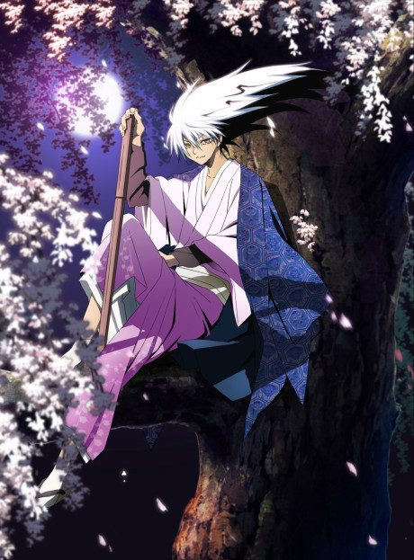

Anime
Manga
Nura: Rise of the Yokai Clan
ぬらりひょんの孫
After the anime, read the manga from Chapter 135.
7.3AniList
—Animeter
48 ep2 seasons
Anime finished. Where does the manga pick up?
Start at Chapter135
Demon Capital ends at chapter 134 (end of volume 16); start at chapter 135.
183134218 end
Nura: Rise of the Yokai ClanNura: Rise of the Yokai Clan - Demon CapitalStart reading here